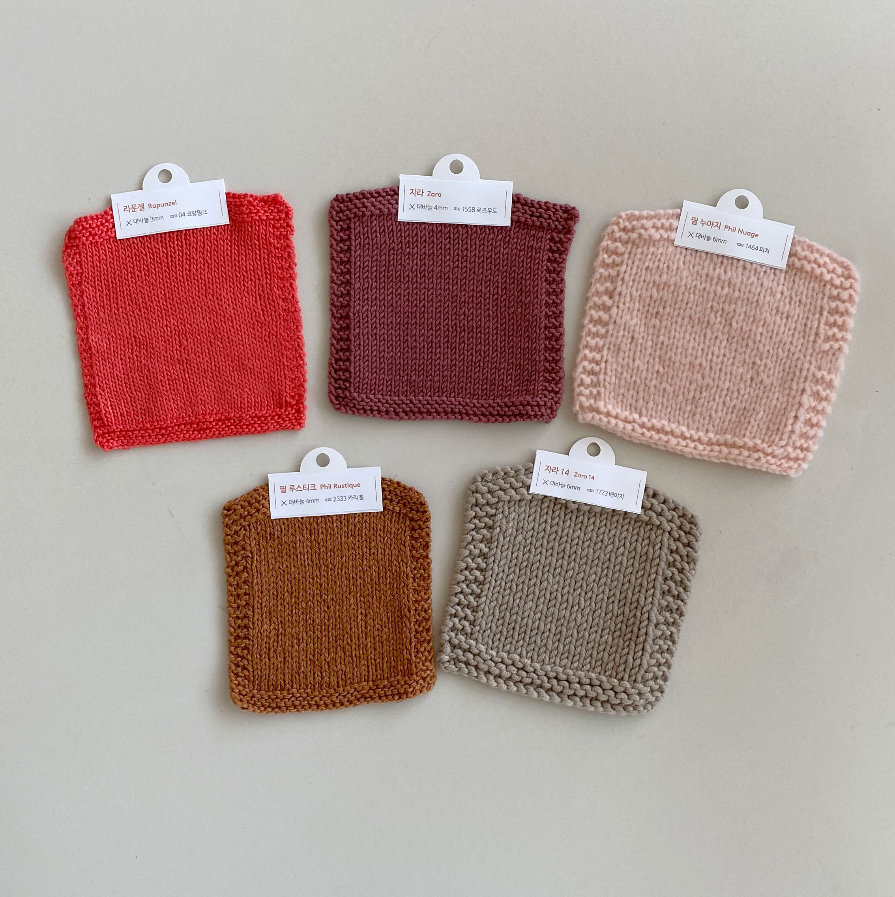

게이지란?
- 게이지는 뜨개질을 시작하기에 앞서 꼭 알아야 하는 "사이즈 가이드"
- 사람마다 뜨는 힘이 다르기 때문에, 나오는 결과물의 크기가 달라짐. 따라서 게이지 측정은 필수
- 가로세로 10cm 안에 몇 코, 몇 단이 들어가는지 측정하는 수치 => 콧수와 단수를 cm 단위로 환산하는 방법
게이지 뜨는 법 ▼
- 겉뜨기로 3단을 뜬다.
- 메리야스 부분 길이가 10cm 이상이 될 때까지 다음 1~2단을 반복한다.
- 1단: 겉뜨기 3코, 마지막 3코 남을 때까지 안뜨기, 겉뜨기 3코
- 2단: 전부 겉뜨기
- 겉뜨기 3단을 더 뜨고 코막음하여 마무리한다.
완성된 게이지 ▼

※게이지 세탁은 필수, 세탁 전과 세탁 후 가로세로 10cm 안에 몇 코, 몇 단이 들어가는지 확인